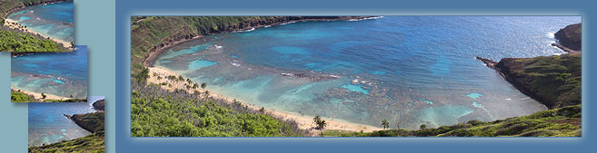
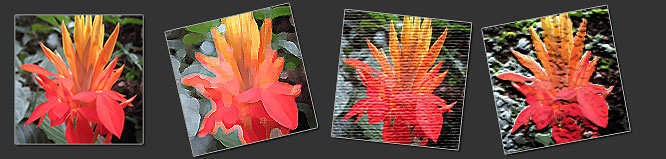

Adobe Photoshop - A Beginners Guide (Day 1)
Class Description: Learn the basic features of Photoshop that allow you to enhance and improve your photos. This enlightening and highly practical class is designed for individuals who want to work with images simply and directly, without the complexity of the more advanced features of Photoshop. Start with a tour of the program interface and important settings, then practice cropping, rotating, retouching and cloning. Explore layers & layer styles, filters, painting and adding text. Make use of flexible adjustment layers to improve tone and color, and then correct common forms of image distortion. Work with time-saving automated features and use Adobe Bridge to explore and organize your photo collection. Save editable, multi-layer files and prepare images for emailing to family and friends.
Exercise 1 - Getting you (and Photoshop) ready to go...
Exercise 2 - Controlling your image and workflow
Exercise 3 - Leveraging the power of Adobe Bridge
Exercise 4 - Improving an Australian sunset
Exercise 5 - Convert an Australian sunset to black and white
Exercise 6 - Retouching a Vietnam beach kid scene
Exercise 7 - Fix a distorted Slovenian house
Exercise 8 - Getting creative with Mokoli'i Island
Exercise 9 - Cloning fish on a Cayman Island coral head
Exercise 10 - Creating a panorama of Hanauma Bay, Oahu, Hawaii
Exercise 11 - Rearrange and 'real life' a Hawaii hiking puzzle
Exercise 12 - Get creative with artistic filters
Exercise 13 - Giving your teacher a funny(er) and deeper face
Exercise 14 - Modifying images for email
• This class is specifically designed for those with little or no Photoshop experience.
• This class is designed to be taught live (5.5 hours)
• This class was designed for Photoshop CS3
• This class has a Day 2
Exercise 1 - Getting you (and Photoshop) ready to go...
In this exercise we will explore and modify the Photoshop workspace, then visit the Toolbar and reset tool options. We will also modify program preferences and set the color environment.
Step by Step »
- Adobe Photoshop CS3 and the Adobe product family
- Take a quick tour the Photoshop CS3 Workspace
- Menu Bar - Along the top and intuitively named
- Tool Option Bar - Under the Menu Bar. Options change depending on what tool you have selected in the...
- Tool Bar - To the left. Leave it there.
- Palettes - To the right. All 21 are found in the Menu Bar under Window
- Modify your Workspace - then set it back to the default
- To set the default workspace from the Menu bar go to Window > Workspace > Default
- STOP!! - Reset all tools now
- Many settings in Photoshop (including tool options in the Tool Options Bar) are 'sticky'. In other words, if you change them and they stick that way until you change them to something else.
- If you don't want your tools to stick (behave) the way they were last set, pick any tool in the Tool Bar and right-click on that tools icon in the Tool Options Bar - choose Reset All Tools
- Setting important Preferences (for class)
- On a Mac, from the Menu bar go to Photoshop > Preferences
- On a PC, from the Menu bar go to Edit > Preferences
- Under the General section: set Image Interpolation to Bicubic Sharper (Best for Reduction)
- Under the General section: set UI Font Size to Large
- Under the File Handling section: make sure Prefer Adobe Camera raw for JPG Files is off
- Under the File Handling section: set Maximize PSD and PSB File Compatibility to Always
- Under the Performance section: set the History States to 50
- Under the Cursors section: select Full Size Brush Tip and Show Crosshair in Brush Tip
- Under the Unit & Rulers section: set both Rulers and Type to pixels
- Restart Photoshop
- Preference settings will vary from person to person (i.e. preferences)
- Try here for a full explanation of your Preferences
- Setting your Photoshop color space
- From the Menu bar go to Edit > Color Settings
- Print designer? pick the North America Prepress 2 preset
- Web designer? pick the North America Web/Internet preset
- Print and web designer? Toggle when needed
- You MUST Calibrate you monitor - try here for a calibration device
Exercise 2 - Controlling your image and workflow
In this exercise we will practice opening an image, zooming in and out, panning, and toggling between different screen modes. We will also practice moving forward and backward in time (History) as you work, saving a file, and introduce some vital keyboard shortcuts.
Step by Step »
- From the Menu Bar - File > Open
- Navigate to the photoshop-01 folder and open simpsons.jpg
- To give yourself a little room to work by dragging out the lower right corner of the image window
- Select the Zoom Tool from the Tool bar
- Zoom in to one of the Simpson's characters by clicking
- Zoom back out by option [alt] clicking the Zoom Tool- watch the cursor
- Fact - Photoshop is a 2 handed program - speeds up workflow
- Do not use the Zoom In/Zoom Out boxes in the Options Bar
- Try Zooming into an area by dragging the Zoom Tool
- Try zooming in and out with the Keyboard - cmd [ctrl] + & cmd [ctrl] —
- Zooming from the Menu Bar (what the rookies do)
- Zooming Toolbar Shortcuts !!
- Double clicking the Hand Tool maximizes your image
- Double clicking the Zoom Tool brings the view to 100% - ideal for sharpening and web design
- Try panning around a zoomed in image with the Hand Tool
- If you want access to the Hand Tool while using a different tool, use the spacebar
- Use ‘f’ to toggle through the Screen Modes (1,3 & 4 are cool)
- Hit ‘f’ until you have a black background
- Hit the Tab to hide toolbars/panels/menus
- Hit cmd [ctrl] 0 - a great place to admire/critique your work
- Set the foreground and background colors to the default on the Toolbar
- Select the Brush Tool from the Tool Bar
- Paint 10 brush strokes over the Simpson's image
- Fact: Photoshop is engineered for you to move both forward and backward in time (History)
- In the Menu Bar go to Edit > Undo
- In the Menu Bar go to Edit > Redo
- Critical Keyboard Shortcut: To Undo (then redo) the last thing you did use cmd [ctrl] z
- In the Menu Bar go to Edit > Step Backward
- In the Menu Bar go to Edit > Step Backward
- In the Menu Bar go to Edit > Step Backward
- Is there a better way?
- Critical Keyboard Shortcut: To Step Backward in time use cmd [ctrl] + option [alt] z
- The number of steps back you can take is based on a Preference setting
- Need to Redo what you have Undone? Use cmd [ctrl] + shift z
- Open the History Palette
- Try to undo & redo states with the History Palette
- Close the simpsons.jpg - DO NOT SAVE !!
Exercise 3 - Leveraging the power of Adobe Bridge
In this exercise we will use Adobe Bridge to view and manage our class images. We will also explore some handy features of this complimentary, file browsing program.
Step by Step »
- From the Photoshop Menu Bar go to File > Browse (will open Adobe Bridge)
- In Adobe Bridge, navigate to the ps-day-1 folder
- Load the default, Bridge Workspace (Window > Workspace > Default)
- Bonus I: Use the slider to increase & decrease the size of your thumbnails (bottom)
- Bonus II: Toggle though the 'quick' workspace buttons (lower right)
- Bonus III: Create a slide show (from the Menu Bar got to View > Slideshow)
- Bonus IV: Rating and sorting photos (from the Menu Bar got to Label - pick a star rating)
- In Adobe Bridge, double-click to open sunset.jpg in Photoshop
- On a Mac, if you do not want Adobe Bridge sitting behind your Photoshop, from the Photoshop menu bar go to Photoshop > Hide Others.
Exercise 4 - Improving an Australian sunset
In this exercise we will start with a scanned image, rotate and crop, then improve color and contrast in one easy and adjustable step. We will then add (and modify) text.
Step by Step »
- Perform an image assessment - What do we need to do?
- From the Menu Bar go to File > Automate > Crop and Straighten Photos
- What did Photoshop do?
- How did Photoshop do? Good or bad?
- From the Menu Bar - Image > Rotate Canvas > 90° CCW
- Crop off the excess with the Crop Tool
- Crop Tool Tip 1: use caps lock to change a tool’s look.
- Crop Tool Tip 2: Hold control [ctrl], after you begin dragging, to fine tune the crop box.
- Crop Tool Tip 3: To perform the crop, hit return [enter] - To cancel the crop, hit esc
- Apply text with the Text Tool
- Change the font, font size and font color
- Notice that Photoshop has created a separate layer for your text
- Position the title with the Move Tool
- Toggle the visibility of your text layer on and off in the layers palette
- From the bottom of the layers palette, add an Adjustment Layer for Levels - bring in the highlight tail
- Re-adjust the Levels Adjustment Layer
- From the Menu Bar go to File > Save as...sunset-color.psd
- Need to save your file without a loss in quality?
- Need to save your file will all the layers intact?
- Pick .psd - Adobe Photoshop's native format
- From the Menu Bar go to File > Close
Exercise 5 - Convert an Australian sunset to black and white
In this exercise we will start with a scanned image, rotate and crop, then improve color and contrast in one easy and adjustable step. We will then convert the image to a beautiful (and adjustable) black and white.
Step by Step »
- Highlight on the original sunset.jpg
- From the Menu Bar go to Image > Rotate Canvas > 90° CCW
- Measure along the top edge of the image (left to right) with the Ruler Tool
- Tool Bar Tip: Tools with triangles in the lower right corner have additional tools hidden underneath them - with your mouse, click and hold to reveal these additional tools
- From the Menu Bar go to Image > Rotate Canvas > Arbitrary...
- Select the Crop Tool.
- Drag out a 'rough' crop.
- Use the Crop area handles to adjust the crop bounds.
- While modifying the crop handles, experiment with the shift key and option [alt] keys
- Perform the crop
- Try here for everything to do with Photoshop cropping - www.thegoldenmean.com
- Note: There are many rules photo composition - www.digital-photography-school.com
- From the bottom of the layers palette, add an Adjustment Layer for Levels - bring in the highlight tail
- From the bottom of the layers palette, add an Adjustment Layer for Black & White - style to taste
- From the Menu Bar go to File > Save as...sunset-bw.psd
- From the Menu Bar go to File > Close
- Bonus Demo: Perspective Crop
Exercise 6 - Retouching a Vietnam beach kid scene
In this exercise we will start with a scanned image, rotate and crop, then practice with different retouching tools. We will then add a beautiful (and adjustable) photo filter.
Step by Step »
- In Adobe Bridge, double-click to open vietnam.jpg
- From the Menu Bar go to Image > Rotate Canvas > 90° CW
- Rotate & Crop simultaneously with the Crop Tool
- Crop Tool hint: moving your cursor slightly outside one of the corner handles allows you to rotate the crop box - watch you cursor icon to ensure you are at the right spot
- Remove dust and smudges with the Spot Healing Brush Tool
- Many tools in Photoshop are based around the idea of a brush
- Critical Keyboard Shortcut: Brackets - [ & ] - changes the brush size
- Fix the upper left corner of sky with the Healing Brush Tool
- Remove the rocks, boat and date(s) with the Patch Tool
- Important: Retouching is a MAJOR genre within Photoshop
- Successful retouching requires practice, correct tool use and knowledge of appropriate techniques
- From the bottom of the layers palette, add an Adjustment Layer for Levels - do you need it?
- From the bottom of the layers palette, add an Adjustment Layer for Photo Filter - style to taste
- From the top of the layers palette, change the Photo Filter Adjustment Layer's opacity
- Covert the Background layer to a regular layer by option [alt] double-clicking the Background layer thumbnail
- Add additional space under the image with the Crop Tool
- From the bottom of the layers palette, add an Adjustment Layer for Solid Color - pick any color
- Drag the Solid Color Adjustment Layer to the bottom of the layer stack
- Re-adjust the Solid Color Adjustment Layer and pick a color from the image
- Add a caption to the extra space with the Text Tool - style and position to taste
- Select the layer which contains the kids
- From the bottom of the layers palette, add a Drop Shadow Layer Style (fx)
- Adjust the Drop Shadow to taste
- Toggle through your screen modes (f) until you get to a black background - a great place to admire/critique your work
- Hit Tab to hide the workspace
- Hit cmd [ctrl] 0
- From the Menu Bar go to File > Save as...vietnam-fix.psd
- From the Menu Bar go to File > Close
Exercise 7 - Fix a distorted Slovenian house
In this exercise we will remove image distortion by working with Smart Objects and the Lens Correction filter. We will then experiment with colors and the brush tool.
Step by Step »
- In Adobe Bridge, double-click to open slovenia.jpg
- To protect the original layer, duplicate the Background layer (i.e. drag it to the Create a new layer icon at the bottom of the layers palette)
- From the Menu Bar go to View > Rulers
- Drag a Guide down from top Ruler Bar to visually check the roof line
- Demo: correcting distortion...the sorta wrong way
- With the duplicated layer selected, from the Menu Bar, go to Filter > Convert for Smart Filters
- Notice the thumbnail has changed to show that the layer is now a Smart Object
- From the Menu Bar, go to Filter > Distort > Lens Correction...
- Demo: Reset a dialogue box by option-clicking the Cancel button (which will say Reset)
- Straighten the roof with the Straighten Tool (top left)
- Take out the distortion with the Remove Distortion slider
- Scale the photo up with the Scale slider
- Add a vignette with the amount slider
- Exit the dialogue box and look at your layers palette
- Re-adjust the Lens Correction filter
- From the bottom of the layers palette, create a new, blank layer
- Set the Foreground color chip (bottom of the toolbar) to a bright color
- Write your name on the wall with the Brush Tool with a hard edge brush
- Write your name on the wall with the Brush Tool with a soft edge brush
- Pro Tip: Right click on your image with a Brush based to reveal the brush options
- Note: Most brushes have a size and hardness value
- Don't miss the oodles of creative brushes that ship with Photoshop
- Photoshop for painting is a major sub-genre of Photoshop usage
- From the bottom of the layers palette, add an Adjustment Layer for Levels - do you need it?
- From the bottom of the layers palette, add an Adjustment Layer for Brightness/Contrast
- Adjust the contrast of the image
- From the Menu Bar go to File > Save as...slovenia-fix.psd
- From the Menu Bar go to File > Close
Exercise 8 - Getting creative with Mokoli'i Island
In this exercise we will straighten the horizon and mirror an image by adjusting the canvas size, then duplicating, transforming and moving a layer. We will then perform spot color saturations and desaturations.
Step by Step »
- In Adobe Bridge, double-click to open hat.jpg
- Measure the horizon (from left to right) with the Ruler Tool
- From the Menu Bar go to Image > Rotate Canvas > Arbitrary...
- Crop away the ‘dead’ area with the Crop Tool
- Covert the Background layer to a regular layer by option [alt] double-clicking the Background layer thumbnail
- Note: Background layers cannot have transparency (i.e. you can't look through them)
- From the Menu Bar go to Image > Canvas Size
- Click the Relative checkbox
- Enter 100 for the width and set the measurement to percent
- In the 3x3 grid of squares, click either left middle box or the right middle box
- Double-click the Hand Tool so you can see your whole image
- Duplicate the image layer (i.e. drag it to the Create a new layer icon at the bottom of the layers palette)
- With the duplicate layer selected, from the Menu Bar go to Edit > Transform > Flip Horizontal
- With the Move Tool, reposition the flipped layer to mirror the image
- Note: While moving, add shift to constrain the movement
- Select the upper of the two image layers
- From the Layer Palette menu (upper right corner) choose Merge Down
- Experiment with the Sponge Tool (for example, desaturate the beach and saturate the blue sky)
- Tip: When working with the Sponge Tool, using a semi-soft brush may help prevent sharp lines of saturation/desaturation from appearing on your image
- Tip: Decreasing the flow of the Sponge Tool may be helpful
- Note: Creative composition is a MAJOR genre within Photoshop (ex worth1000.com)
- From the bottom of the layers palette, add an Adjustment Layer for Brightness/Contrast
- Adjust the contrast of the image
- Create a new, blank layer
- Move the blank layer to the bottom of the layer stack
- From the Menu Bar go to Image > Canvas Size
- Add a 40 pixels of canvas around the image
- From the Menu Bar go to Edit > Fill
- Choose Black
- From the Menu Bar - File > Save as...hat-fix.psd
- From the Menu Bar - File > Close
Exercise 9 - Cloning fish on a Cayman Island coral head
In this exercise we will explore creative use of the Clone Tool, then adjust color saturation and add depth (contrast) to the image.
Step by Step »
- From Bridge, double-click to open littleguy.jpg
- Create a blank, new layer
- From the Tool Bar select the Clone Tool - notice that this tool is also brush-based
- Be sure aligned is turned off in the Tool Options Bar
- Set Sample: to All Layers in the Tool Options Bar
- Prior to cloning, set the clone brush size (Master Diameter) to a little bigger than the fish size (+/- 100px)
- Set the brush hardness to 80%
- With the blank layer selected, option-click the fish
- Click at a different location to clone the fish
- option-click a coral polyp mouth
- Click at a different location to clone the polyp mouth
- Notice that your work has been done on a separate layer - very smart
- From the Tool Bar select the Eraser Tool - notice that this tool is also brush-based
- Make sure you are on the clone layer - erase a few of your clones
- From the bottom of the layers palette, add an Adjustment Layer for Levels - do you need it?
- From the bottom of the layers palette, add an Adjustment Layer for Hue/Saturation
- Make global changes to the hue (color) and saturation sliders
- Reset the dialogue box by option-clicking the Cancel button
- Make specific color-range, hue and saturation changes
- From the bottom of the layers palette, add an Adjustment Layer for Brightness/Contrast
- Adjust the contrast of the image
- From the Menu Bar - File > Save as...littleguy-fix.psd
- From the Menu Bar - File > Close
Exercise 10 - Creating a panorama of Hanauma Bay, Oahu, Hawaii
In this exercise we will use an automated, Photoshop feature to create a panorama from multiple, digital photos. We will then add a color border, stroke and subtle glow to the image.
Step by Step »
- From the Menu Bar go to File > Automate > Photomerge...
- Add the 3 Hanauma Bay photos
- Leave the Layout setting on Auto
- Panorama (multi-photo) shooting a popular hobby - photoshop provides 'stitching' tool
- Crop away the ‘dead’ area with the Crop Tool
- From the Menu Bar - Image > Canvas Size...
- Add a 150 pixels of canvas to each side (be sure set the canvas to expand from the center)
- Add a blank, new layer - drag it to the bottom of the layer stack
- Use the Eyedropper Tool to sample a color from the image
- The Eyedropper Tool has sample size settings in the Tool Options Bar
- Fill the blank layer - From the Menu Bar go to Edit > Fill
- Choose Foreground Color
- Select the Hanauma Bay image layers (shift-click to multi-select layers)
- From the Layer Palette menu (upper right corner) choose Merge Layers
- From the bottom of the layers palette, add an Outer Glow (fx) layer style - style to taste
- While in the Layer Style dialogue box, also add a Stroke style - style to taste
- From the bottom of the layers palette, add an Adjustment Layer for Black & White
- option click between the image layer and the Black & White Adjustment Layer to isolate the effect of the black and white adjustment
- When linking an adjustment layer to the layer below it, watch for the cursor to change to a link icon - then click
- From the Menu Bar - File > Save as...panorama.psd
- From the Menu Bar - File > Close
Exercise 11 - Rearrange and 'real life' a Hawaii hiking puzzle
In this exercise we will explore the nuances of moving and re-stacking layers, layer transformations, and adding layer styles.
Step by Step »
- From Bridge, double-click to open puzzle.psd
- From the Layer Palette menu (upper right corner) choose Palette Options
- Modify the Layer Palette Options to show larger thumbnails and layer bounds
- From the Menu Bar - View > Show > Smart Guides
- With the Move Tool, rearrange the puzzle by selecting a layer then moving the associated piece
- Try the Auto Select setting in the Tool Option Bar
- Once arranged, move all layers as a unit (shift-click to select multiple layers, then move all with the Move Tool)
- Select the top left puzzle piece (Vince with red hat & baby Nova) in the Layers palette
- Rename this layer 'Vince'
- Move this layer to the top of the layer stack
- From the bottom of the layers palette, apply a Bevel & Emboss Layer Style (fx) to the 'Vince' layer - style to taste
- Copy the Bevel & Emboss Layer Style by right-clicking on the layer name and choosing Copy Layer Style
- Select the layers without the layer style (shift-click to select multiple layers)
- Right click on any layer name and choose Paste Layer Style
- Select the 'Vince' layer
- From the Menu Bar go to Edit > Free Transform
- Rotate the 'Vince' puzzle piece
- Similar to the Crop Tool, you must tell the Free Transform Box when you are done (return [enter] or Esc)
- Apply a Drop Shadow layer style to the 'Vince' puzzle piece
- From the Menu Bar - File > Save as...puzzle-fix.psd
- From the Menu Bar - File > Close
Exercise 12 - Get creative with artistic filters
In this exercise we will practice cropping, modifying the canvas size, and adding a flexible, background color. We will work with Smart Objects, the Filter Gallery and layers styles.
Step by Step »
- From Bridge, double-click to open flower.jpg
- In the toolbar, select the Crop Tool
- In the Options bar, set the Crop width and height to 400 pixels
- Crop the image
- Covert the Background layer to a regular layer by option [alt] double-clicking the Background layer thumbnail
- From the Menu bar go to Image > Canvas Size
- Unselect the Relative checkbox, lock the canvas so it expands to the right and set the width to 1600 pixels
- Be sure your Smart Guides are on...from the Menu Bar - View > Show > Smart Guides
- With the Selection Tool, option [alt] drag the image to the right
- Hint: adding SHIFT after you begin dragging constrains movement
- Repeat the process until you have 4 images (layers) from left to right
- Turn each of the 3 duplicated layers into Smart Objects...from the Menu Bar, go to Filter > Convert for Smart Filters
- Select one of the duplicated layers and from the Menu Bar got to Filter > Filter Gallery - chose a filter and style to taste
- Repeat the process for the 2 remaining duplicate layers, choosing and styling a different filter for each
- From the Menu bar go to Image > Canvas Size
- Select the Relative checkbox and expand the canvas by 100 pixels in all directions
- Add a Solid Color adjustment layer
- Move the Solid Color adjustment layer to the bottom of the layer stack - re-adjust the color to taste
- Rotate each layer slightly via the keyboard shortcut cmd [ctrl] T
- Add a Drop Shadow and Stroke Layer Style to one of the layers - style to taste
- Copy the Drop Shadow and Stroke Layer Style by right-clicking on the layer name and choosing Copy Layer Style
- Select the layers without the layer styles (shift-click or cmd [ctrl]-click to select multiple layers)
- Right click on any layer name and choose Paste Layer Style
- From the Menu Bar go to File > Save as...flower-fix.psd
- From the Menu Bar - File > Close
Exercise 13 - Giving your teacher a funny(er) and deeper face
In this exercise we will work with the Liquify filter to modify the face of your instructor. We will also apply dodging and burning to give his face more contrast.
Step by Step »
- From Bridge, double-click to open teacher.jpg
- In Photoshop, check your levels (i.e. add an Adjustment Layer)
- Duplicate the Background layer
- From the Menu Bar go to Filter > Liquify
- Select the Bloat Tool (left) and set the following settings (right):
- Brush Density: 50
- Brush Pressure: 25
- Brush Rate: 50
- This settings will soften your brush and slow it down
- Bloat my eyes
- Be sure to change your brush location and size for better results
- Select the Pucker Tool (left)
- Pucker the nose and anything else you want
- Hit Ok to exit the Liquify dialogue box
- Compare the two layers by toggling the liquified layer's visibility
- While holding the option [alt] key, click the Create a new layer icon at the bottom of the layers palette
- In the dialogue box enter these 2 settings:
- Mode: Overlay
- check Fill with Overlay-neutral Color (50% gray)
- Set the Foreground and Background color chips to their default colors (black & white)
- Select the Brush Tool from the Tool bar
- In the Brush Tool Options set the Opacity to 10% and Flow to 50%
- Paint in the shadow areas of the face with black
- Switch the Foreground and Background colors
- Paint in the Highlight areas of the face with white
- Toggle the Overlay layer visibility on and off to see the effect - tune back the opacity of that layer if need be
- With your retouching skills, eliminate some of the more distracting spots (i.e. use the Patch Tool, Spot Healing Brush Tool & Healing Brush Tool)
- From the Menu Bar go to File > Save as...teacher-fix.psd
- From the Menu Bar - File > Close
Exercise 14 - Modifying images for email
In this exercise we will practice resizing (decreasing the pixel count) of a high resolution image so that once saved, it has a suitable file size (dimension and kb) for emailing to friends and family.
Step by Step »
- In Bridge, double-click to open email.jpg
- In Photoshop, check your levels (i.e. add an adjustment layer)
- From the Menu Bar go to Image > Image Size
- Change the larger of the width or height Pixel Dimension values to 500 pixels
- Be sure the Constrain Proportions check box is on
- Be sure the Resample Image check box is on
- Be sure Bicubic Sharper (Best for Reduction) is selected
- From the Menu Bar go to Filter > Sharpen > Unsharp Mask
- Try these settings:
- Amount: 400 (this number can be reduced if the sharpening is too strong)
- Radius: 0.2
- Threshold: 0
- Remember: It is better to under sharpen than is is to over sharpen
- From the Menu Bar go to File > Save for Web & Devices...
- In the Save for Web & Devices
- Try these settings:
- Be sure the Optimized tab is selected (top)
- At the right, under Preset: choose either JPEG High or JPG Medium - you decide
- Save your email ready file !!
- Close you file